Analyses for write-up
Yiming Qian & Rick Gilmore
2021-02-16 09:10:21
Purpose
This document shows our analyses following the preregistered plan. It also shows the results of trimming all cases whose scores on either of the visual perception measures exceed 3 SDs from the pooled mean.
Setup
Analysis
Import and clean
We import data previously cleaned to remove cases where accuracy is lower than the guess rate and any zero scores in the survey measures.
# load the data and make each variable right
df1 <- readr::read_csv(file.path(params$data_path, params$csv_fn)) ##
## ── Column specification ────────────────────────────────────────────────────────
## cols(
## Participant = col_double(),
## Sex = col_character(),
## Race = col_character(),
## Age = col_double(),
## School_year = col_double(),
## Major = col_character(),
## Handedness = col_double(),
## Glasses = col_double(),
## Acuity = col_double(),
## Color_vision = col_double(),
## Stereo = col_double(),
## Motion_duration_Threshold = col_double(),
## Contrast_Sensitivity_Threshold = col_double(),
## Vocabulary_scores = col_double(),
## Vocabulary_scores_cor_num = col_double(),
## Mental_Rotation_scores = col_double(),
## Mental_Rotation_scores_both = col_double(),
## Feminine_hobbies = col_double(),
## Masculine_hobbies = col_double()
## )Rename variables
We rename some of the variables to make the exposition clearer.
df1 <- df1 %>%
dplyr::rename(., 'motion_dur_thr' = 'Motion_duration_Threshold',
'contrast_thr' = 'Contrast_Sensitivity_Threshold',
'mental_rot' = 'Mental_Rotation_scores',
'mental_rot_both' = 'Mental_Rotation_scores_both',
'vocab' = 'Vocabulary_scores',
'vocab_num' = 'Vocabulary_scores_cor_num')Exclude outliers
Detect outliers 3 SD from the grouped mean.
# define a function to remove outliers
FindOutliers <- function(data, sd_thresh = as.numeric(params$outlier_sd_thresh)) {
sd = sd(data, na.rm = T)
mean = mean(data, na.rm = T)
# we identify extreme outliers
extreme.threshold.upper = (sd * sd_thresh) + mean
extreme.threshold.lower = -(sd * sd_thresh) + mean
result <-
which(data > extreme.threshold.upper |
data < extreme.threshold.lower)
print(result)
}
outliers <- lapply(df1, FindOutliers)## integer(0)## Warning in var(if (is.vector(x) || is.factor(x)) x else as.double(x), na.rm =
## na.rm): NAs introduced by coercion## Warning in mean.default(data, na.rm = T): argument is not numeric or logical:
## returning NA## integer(0)## Warning in var(if (is.vector(x) || is.factor(x)) x else as.double(x), na.rm =
## na.rm): NAs introduced by coercion
## Warning in var(if (is.vector(x) || is.factor(x)) x else as.double(x), na.rm =
## na.rm): argument is not numeric or logical: returning NA## integer(0)
## [1] 1 21 56
## integer(0)## Warning in var(if (is.vector(x) || is.factor(x)) x else as.double(x), na.rm =
## na.rm): NAs introduced by coercion
## Warning in var(if (is.vector(x) || is.factor(x)) x else as.double(x), na.rm =
## na.rm): argument is not numeric or logical: returning NA## integer(0)
## integer(0)
## integer(0)
## [1] 39 59 104
## [1] 82 92
## [1] 42 47 79
## [1] 125 128
## [1] 16 129
## integer(0)
## integer(0)
## integer(0)
## integer(0)
## integer(0)
## integer(0)outliers## $Participant
## integer(0)
##
## $Sex
## integer(0)
##
## $Race
## integer(0)
##
## $Age
## [1] 1 21 56
##
## $School_year
## integer(0)
##
## $Major
## integer(0)
##
## $Handedness
## integer(0)
##
## $Glasses
## integer(0)
##
## $Acuity
## [1] 39 59 104
##
## $Color_vision
## [1] 82 92
##
## $Stereo
## [1] 42 47 79
##
## $motion_dur_thr
## [1] 125 128
##
## $contrast_thr
## [1] 16 129
##
## $vocab
## integer(0)
##
## $vocab_num
## integer(0)
##
## $mental_rot
## integer(0)
##
## $mental_rot_both
## integer(0)
##
## $Feminine_hobbies
## integer(0)
##
## $Masculine_hobbies
## integer(0)Focus on vision measures.
Motion duration threshold with all participants.
df1 %>%
ggplot(.) +
aes(y = motion_dur_thr, x = Sex) +
geom_violin() +
ggtitle('Motion threshold by sex: All participants')## Warning: Removed 4 rows containing non-finite values (stat_ydensity).
Excluding outliers.
df1[-outliers[['motion_dur_thr']],] %>%
ggplot(.) +
aes(y = motion_dur_thr, x = Sex) +
geom_violin() +
ggtitle('Motion threshold by sex: Outliers excluded')## Warning: Removed 4 rows containing non-finite values (stat_ydensity).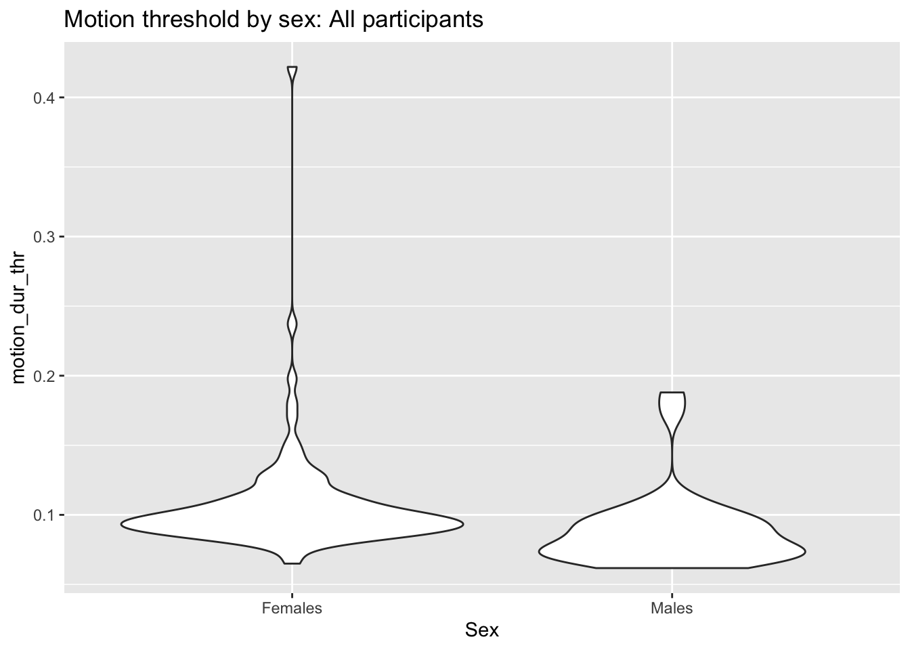
df1$motion_dur_thr[outliers[['motion_dur_thr']]]## [1] 0.4219021 0.2371627Contrast threshold with all participants.
df1 %>%
ggplot(.) +
aes(y = contrast_thr, x = Sex) +
geom_violin() +
ggtitle('Contrast threshold by sex: All participants')## Warning: Removed 2 rows containing non-finite values (stat_ydensity).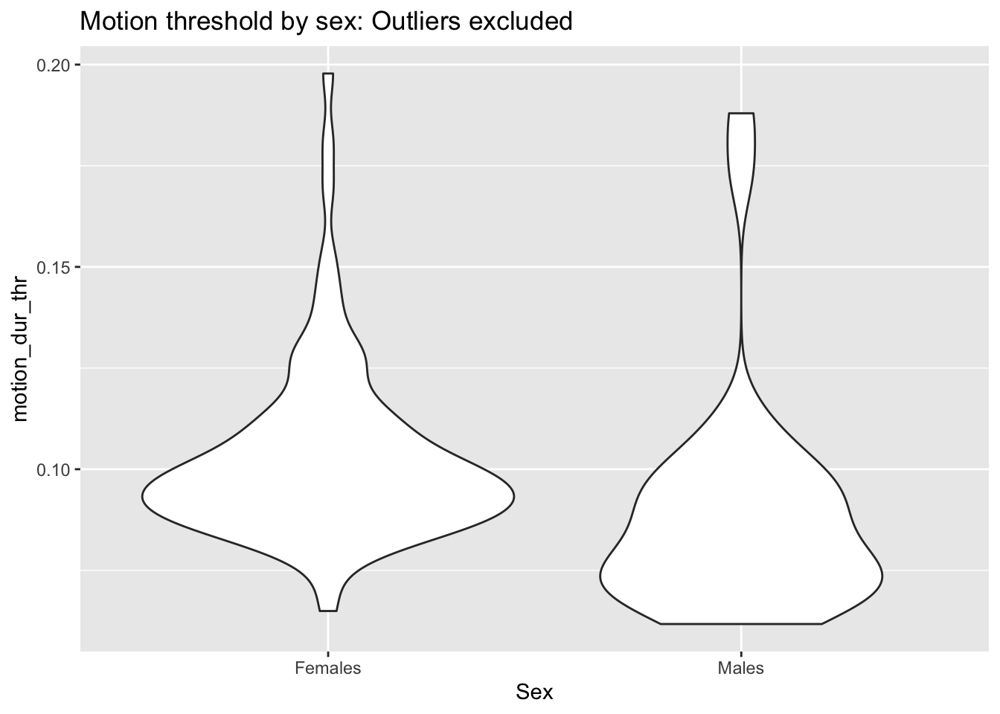
Excluding outliers
df1[-outliers[['contrast_thr']],] %>%
ggplot(.) +
aes(y = contrast_thr, x = Sex) +
geom_violin() +
ggtitle('Contrast threshold by sex: Outliers excluded')## Warning: Removed 2 rows containing non-finite values (stat_ydensity).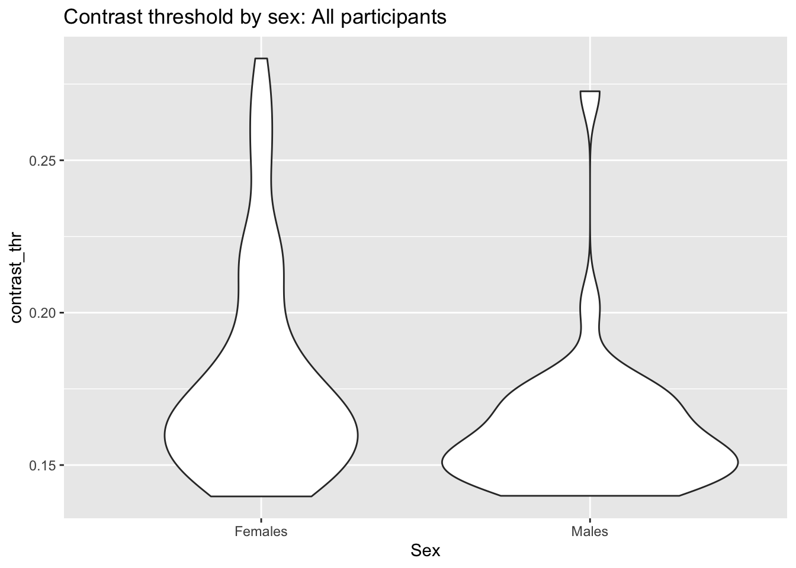
df1$contrast_thr[outliers[['contrast_thr']]]## [1] 0.2772047 0.2834012Exclude the outliers and create a new data frame.
df2 <- df1
df2$contrast_thr[outliers[['contrast_thr']]] <- NA
df2$motion_dur_thr[outliers[['motion_dur_thr']]] <- NAThere were 0 outliers in the motion duration threshold measure, and 2 outliers in the contrast threshold measure.
Check distributions
Do the data follow a normal distribution?
Use Shapiro-Wilk normality test, shapiro.test().
# Shapiro-Wilk normality test
this_var <- c("vocab",
"mental_rot",
"Feminine_hobbies",
"Masculine_hobbies",
"contrast_thr",
"motion_dur_thr")
sw_stat <- c(shapiro.test(df2$vocab)['statistic'],
shapiro.test(df2$mental_rot)['statistic'],
shapiro.test(df2$Feminine_hobbies)['statistic'],
shapiro.test(df2$Masculine_hobbies)['statistic'],
shapiro.test(df2$contrast_thr)['statistic'],
shapiro.test(df2$motion_dur_thr)['statistic']
)
sw_p_val <- c(shapiro.test(df2$vocab)['p.value'],
shapiro.test(df2$mental_rot)['p.value'],
shapiro.test(df2$Feminine_hobbies)['p.value'],
shapiro.test(df2$Masculine_hobbies)['p.value'],
shapiro.test(df2$contrast_thr)['p.value'],
shapiro.test(df2$motion_dur_thr)['p.value']
)
shapiro_wilks_df <- tibble::tibble(this_var, sw_stat, sw_p_val)
shapiro_wilks_df %>%
kableExtra::kable(., format = 'html') %>%
kableExtra::kable_styling()| this_var | sw_stat | sw_p_val |
|---|---|---|
| vocab | 0.978852 | 0.03864609 |
| mental_rot | 0.979328 | 0.04313858 |
| Feminine_hobbies | 0.9825442 | 0.09098377 |
| Masculine_hobbies | 0.9939924 | 0.8568382 |
| contrast_thr | 0.8261428 | 5.362356e-11 |
| motion_dur_thr | 0.857625 | 1.170354e-09 |
If necessary, we will transform the psychophysical thresholds to make the distributions symmetric and appropriate for parametric analyses.
We expected the psychophysical threshold measures to be non-normal, so we log transform them.
df2 <- df2 %>%
dplyr::mutate(., log_motion =log(motion_dur_thr),
log_contrast = log(contrast_thr))T-tests: Comparisons between sexes
Here is our pre-registered description of how we planned to compare sex differences:
To examine sex differences, one-tailed t tests will be conducted to compare men and women on 2 visual perception thresholds, spatial ability, and masculine hobbies. We will use verbal ability as our control variable. We set a family-wise Type I error rate at \(\alpha\)=0.05. Because there are four dependent variables hypothesized to show sex differences, the critical p value for each sex comparison is 0.0125 after Bonferroni correction. Our goal is to obtain .8 power to detect a medium effect size of .5 (Cohen’s \(d\)) at the \(p\) value of .0125 in the one-tailed t tests. Unequal sample sizes of the two sexes may be collected in this study. The minimum effect size of .50 can be obtained by at least 45 male participants out of a total sample size of 300 (see the R-code for power analysis at WRONG URL! shorturl.at/nDHLV). The minimum detectable effect size decreases when male and female sample sizes differ less, but to simply our \(t\) tests, we set the effect sizes at .5.
log(Motion duration threshold)
mdt_tt <-
t.test(
log_motion ~ Sex,
data = df2,
var.equal = TRUE,
alternative = "greater"
) #Hypothesized
mdt_tt##
## Two Sample t-test
##
## data: log_motion by Sex
## t = 3.7359, df = 124, p-value = 0.000142
## alternative hypothesis: true difference in means is greater than 0
## 95 percent confidence interval:
## 0.089656 Inf
## sample estimates:
## mean in group Females mean in group Males
## -2.293820 -2.454955We found sex differences in log(motion_dur_thr). Males took significantly shorter time to detect the direction of motion than females.
log(contrast_thr)
t.test(
log_contrast ~ Sex,
data = df2,
var.equal = TRUE,
alternative = "greater"
) #Hypothesized##
## Two Sample t-test
##
## data: log_contrast by Sex
## t = 2.3409, df = 126, p-value = 0.0104
## alternative hypothesis: true difference in means is greater than 0
## 95 percent confidence interval:
## 0.02259136 Inf
## sample estimates:
## mean in group Females mean in group Males
## -1.750928 -1.828258Log transformed contrast_thr data show the predicted sex differences. Males detect the stimuli with lower contrast than females.
Mental rotation
t.test(
mental_rot ~ Sex,
data = df2,
var.equal = TRUE,
alternative = "less"
) #Hypothesized##
## Two Sample t-test
##
## data: mental_rot by Sex
## t = -2.7478, df = 129, p-value = 0.003429
## alternative hypothesis: true difference in means is less than 0
## 95 percent confidence interval:
## -Inf -1.373374
## sample estimates:
## mean in group Females mean in group Males
## 26.20792 29.66667Sex differences in mental rotation test were found. Males had significantly more correct answers in the mental rotation task than females.
Supplemental
A secondary, supplemental measure of mental rotation task performance is the number of trials in which both correct answers were reported.
t.test(
mental_rot_both ~ Sex,
data = df2,
var.equal = TRUE,
alternative = "less"
) #Hypothesized##
## Two Sample t-test
##
## data: mental_rot_both by Sex
## t = -2.9895, df = 129, p-value = 0.001673
## alternative hypothesis: true difference in means is less than 0
## 95 percent confidence interval:
## -Inf -1.274324
## sample estimates:
## mean in group Females mean in group Males
## 8.841584 11.700000This comparison also shows higher performance in males.
Vocabulary
advoc_total_t <-
t.test(
vocab ~ Sex,
data = df2,
var.equal = TRUE,
alternative = "less"
)
advoc_total_t##
## Two Sample t-test
##
## data: vocab by Sex
## t = -0.74845, df = 129, p-value = 0.2278
## alternative hypothesis: true difference in means is less than 0
## 95 percent confidence interval:
## -Inf 0.9111823
## sample estimates:
## mean in group Females mean in group Males
## 9.165842 9.916667Vocabulary was a control variable in the study. As we predicted, the vocabulary score did not differ between males and females.
Supplemental
A secondary measure of vocabulary performance taking the total number of correct answers, but not penalizing incorrect answers, can be used.
advoc_total_t <-
t.test(
vocab_num ~ Sex,
data = df2,
var.equal = TRUE,
alternative = "less"
)
advoc_total_t##
## Two Sample t-test
##
## data: vocab_num by Sex
## t = -0.66033, df = 129, p-value = 0.2551
## alternative hypothesis: true difference in means is less than 0
## 95 percent confidence interval:
## -Inf 0.8386487
## sample estimates:
## mean in group Females mean in group Males
## 13.91089 14.46667This measure also shows no evidence of sex differences.
Feminine hobbies
t.test(
Feminine_hobbies ~ Sex,
data = df2,
var.equal = TRUE,
alternative = "greater"
)##
## Two Sample t-test
##
## data: Feminine_hobbies by Sex
## t = 4.8717, df = 129, p-value = 1.592e-06
## alternative hypothesis: true difference in means is greater than 0
## 95 percent confidence interval:
## 0.2887051 Inf
## sample estimates:
## mean in group Females mean in group Males
## 3.602397 3.164912We found that females had higher interest scores in female-typed hobbies than males.
Masculine hobbies
t.test(
Masculine_hobbies ~ Sex,
data = df2,
var.equal = TRUE,
alternative = "less"
) #Hypothesized##
## Two Sample t-test
##
## data: Masculine_hobbies by Sex
## t = -7.422, df = 129, p-value = 6.896e-12
## alternative hypothesis: true difference in means is less than 0
## 95 percent confidence interval:
## -Inf -0.5307975
## sample estimates:
## mean in group Females mean in group Males
## 2.797619 3.480952We found that males have higher interest scores in male-typed hobbies than females.
Summary
All predicted findings about sex differences, and the lack of sex differences, were confirmed.
Correlation within Sex
Pregistered analysis plan
To examine how individual differences of visual perception measures are associated with other tasks, we will use correlations within sex. The lower visual perception threshold is, the higher perceptual sensitivity this individual has. In both sexes, we expect to find negative correlations between visual perception measures and spatial ability and masculine hobbies, but no significant correlation with verbal ability. There are four planned correlations (two visual perception tasks × two cognitive tasks) within sex, for a total of eight. This project is a novel study that has not to our knowledge been conducted previously. So we have consciously decided to maintain strict control of Type II error, in order to have enough statistical power to detect a small correlation effect sizes (r=0.20) within the constraints of sample size. This decision to maximize the power (.80) leads to a trade-off between Type I and Type II error. We plan to conduct eight separate one-tailed correlation tests with Type I error at 0.05 and no Bonferroni correction. With a critical p value of .05, around 150 participants are required for each group to detect an effect size of 0.20 at an obtained power of 0.8 with a one-tailed correlation test.
Because our preregistration envisioned a much larger total sample, we have chosen to report the correlations by sex as planned and also for the combined sample.
We select the variables for our correlation analysis, and drop incomplete cases.
df_corr <- df2 %>%
dplyr::select(., Sex,
log_motion,
log_contrast,
mental_rot,
vocab,
Feminine_hobbies,
Masculine_hobbies)
df_complete <- df_corr[stats::complete.cases(df_corr),]
# Set the number of digits to display in the tables
options(digits=2)This gives us \(n=\) 122 complete cases.
Females
Select the females and focus on the numeric scores.
df_complete_F <- df_complete %>%
dplyr::filter(., Sex == 'Females')
df_corr_F <- df_complete_F %>%
dplyr::select(., -Sex)
corr_F <- Hmisc::rcorr(as.matrix(df_corr_F), type = c("pearson"))Coefficients
corr_F$r## log_motion log_contrast mental_rot vocab Feminine_hobbies
## log_motion 1.000 0.197 -0.294 -0.183 0.184
## log_contrast 0.197 1.000 -0.251 -0.063 0.025
## mental_rot -0.294 -0.251 1.000 0.072 -0.320
## vocab -0.183 -0.063 0.072 1.000 -0.087
## Feminine_hobbies 0.184 0.025 -0.320 -0.087 1.000
## Masculine_hobbies 0.018 -0.183 -0.063 0.040 0.489
## Masculine_hobbies
## log_motion 0.018
## log_contrast -0.183
## mental_rot -0.063
## vocab 0.040
## Feminine_hobbies 0.489
## Masculine_hobbies 1.000P values
corr_F$P## log_motion log_contrast mental_rot vocab Feminine_hobbies
## log_motion NA 0.059 0.0045 0.08 7.9e-02
## log_contrast 0.0592 NA 0.0160 0.55 8.2e-01
## mental_rot 0.0045 0.016 NA 0.50 1.9e-03
## vocab 0.0802 0.548 0.4951 NA 4.1e-01
## Feminine_hobbies 0.0787 0.816 0.0019 0.41 NA
## Masculine_hobbies 0.8651 0.081 0.5484 0.71 7.7e-07
## Masculine_hobbies
## log_motion 8.7e-01
## log_contrast 8.1e-02
## mental_rot 5.5e-01
## vocab 7.1e-01
## Feminine_hobbies 7.7e-07
## Masculine_hobbies NA# Get some colors
col <- colorRampPalette(c("blue", "white", "red"))(20)
heatmap(x = corr_F$r, col = col, symm = TRUE)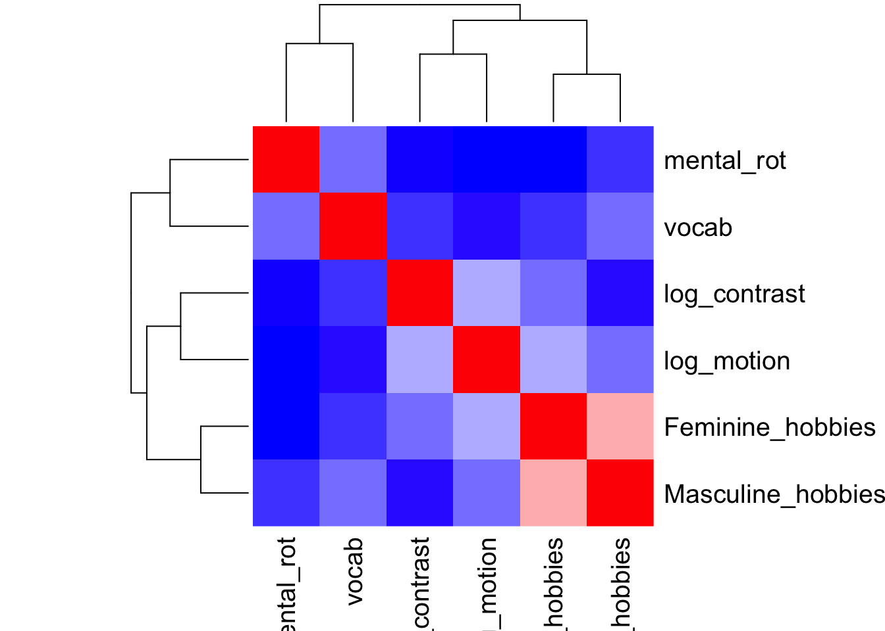
Males
Select the males and focus on the numeric scores.
df_complete_M <- df_complete %>%
dplyr::filter(., Sex == 'Males')
df_corr_m <- df_complete_M %>%
dplyr::select(., -Sex)
corr_M <- Hmisc::rcorr(as.matrix(df_corr_m), type = c("pearson"))Coefficients
corr_M$r## log_motion log_contrast mental_rot vocab Feminine_hobbies
## log_motion 1.000 0.407 0.120 -0.209 -0.024
## log_contrast 0.407 1.000 -0.244 -0.201 0.085
## mental_rot 0.120 -0.244 1.000 -0.171 0.155
## vocab -0.209 -0.201 -0.171 1.000 -0.124
## Feminine_hobbies -0.024 0.085 0.155 -0.124 1.000
## Masculine_hobbies 0.155 0.149 -0.036 -0.035 0.424
## Masculine_hobbies
## log_motion 0.155
## log_contrast 0.149
## mental_rot -0.036
## vocab -0.035
## Feminine_hobbies 0.424
## Masculine_hobbies 1.000P values
corr_M$P## log_motion log_contrast mental_rot vocab Feminine_hobbies
## log_motion NA 0.026 0.53 0.27 0.90
## log_contrast 0.026 NA 0.19 0.29 0.65
## mental_rot 0.526 0.193 NA 0.37 0.41
## vocab 0.267 0.286 0.37 NA 0.51
## Feminine_hobbies 0.899 0.653 0.41 0.51 NA
## Masculine_hobbies 0.415 0.430 0.85 0.85 0.02
## Masculine_hobbies
## log_motion 0.41
## log_contrast 0.43
## mental_rot 0.85
## vocab 0.85
## Feminine_hobbies 0.02
## Masculine_hobbies NA# Get some colors
col <- colorRampPalette(c("blue", "white", "red"))(20)
heatmap(x = corr_M$r, col = col, symm = TRUE)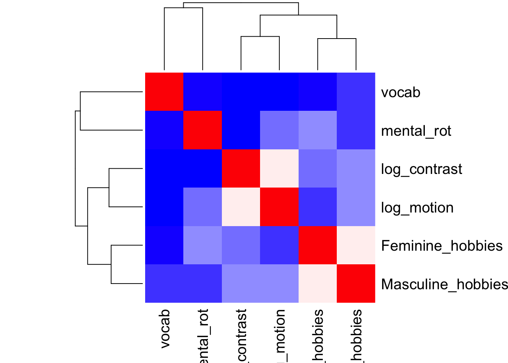
Overall
This combines males and females.
df_complete_numeric <- df_complete %>%
dplyr::select(., -Sex)
corr_all <- Hmisc::rcorr(as.matrix(df_complete_numeric), type = c("pearson"))Coefficients
corr_all$r## log_motion log_contrast mental_rot vocab Feminine_hobbies
## log_motion 1.00 0.29 -0.221 -0.205 0.23
## log_contrast 0.29 1.00 -0.282 -0.107 0.12
## mental_rot -0.22 -0.28 1.000 0.021 -0.26
## vocab -0.21 -0.11 0.021 1.000 -0.12
## Feminine_hobbies 0.23 0.12 -0.262 -0.119 1.00
## Masculine_hobbies -0.13 -0.22 0.075 0.059 0.15
## Masculine_hobbies
## log_motion -0.129
## log_contrast -0.215
## mental_rot 0.075
## vocab 0.059
## Feminine_hobbies 0.146
## Masculine_hobbies 1.000P-values
corr_all$P## log_motion log_contrast mental_rot vocab Feminine_hobbies
## log_motion NA 0.0011 0.0145 0.023 0.0122
## log_contrast 0.0011 NA 0.0016 0.242 0.2044
## mental_rot 0.0145 0.0016 NA 0.821 0.0035
## vocab 0.0235 0.2419 0.8209 NA 0.1914
## Feminine_hobbies 0.0122 0.2044 0.0035 0.191 NA
## Masculine_hobbies 0.1556 0.0174 0.4110 0.517 0.1081
## Masculine_hobbies
## log_motion 0.156
## log_contrast 0.017
## mental_rot 0.411
## vocab 0.517
## Feminine_hobbies 0.108
## Masculine_hobbies NA# Get some colors
col <- colorRampPalette(c("blue", "white", "red"))(20)
heatmap(x = corr_all$r, col = col, symm = TRUE)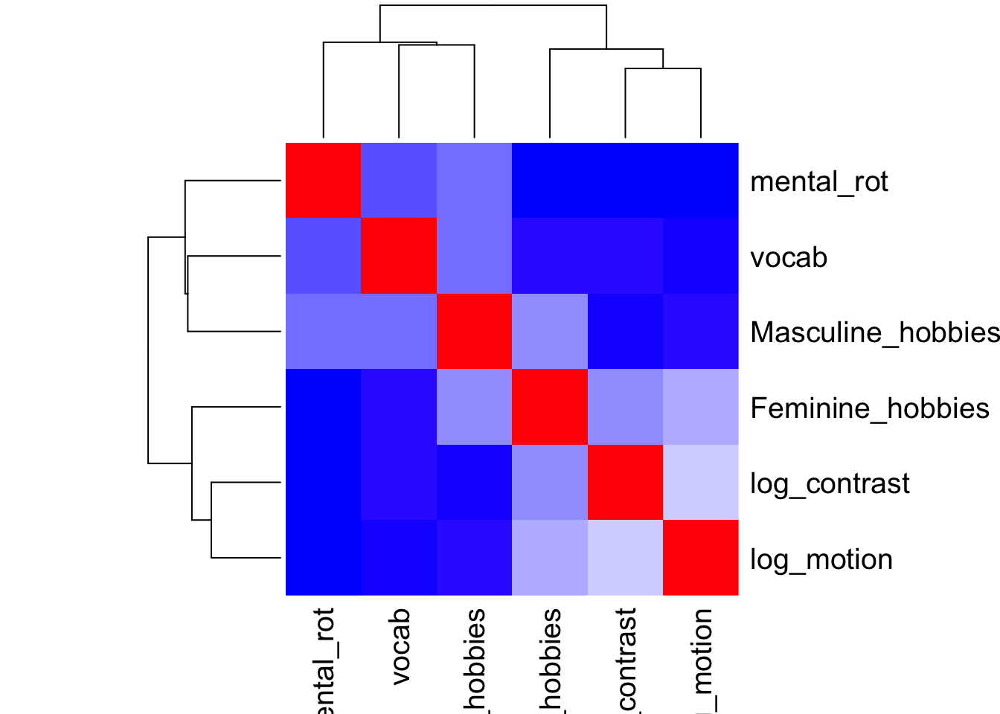
Visualization
We create several functions to make our graphs have similar appearance.
sex_diff_scatter <-
function(df,
x_var,
y_var,
x_rev = FALSE,
y_rev = FALSE,
an1 = "",
an2 = "",
anx = NULL,
any = NULL,
x_lab = "X axis",
y_lab = "Y axis",
square_axis = TRUE) {
require(tidyverse)
require(ggExtra)
x_var_s <- sym(x_var)
y_var_s <- sym(y_var)
p <- ggplot(df) +
aes(
x = !!x_var_s,
y = !!y_var_s,
group = Sex,
color = Sex
) +
geom_point() +
xlab(x_var) +
ylab(y_var) +
stat_smooth(method = "lm", na.rm = TRUE) +
theme_classic2() +
theme(legend.position = "bottom",
legend.title = element_blank()) +
xlab(x_lab) +
ylab(y_lab) +
annotate(
"text",
x = anx,
y = any,
label = c(an1, an2),
color = c('red', 'darkturquoise')
)
if (square_axis)
{
p + coord_fixed()
}
if (stringr::str_detect(x_var, 'hobbies')) {
p <- p + xlim(1, 5)
}
if (stringr::str_detect(y_var, 'hobbies')) {
p <- p + ylim(1, 5)
}
# Reverse scale for threshold measures?
if (x_rev)
p <- p + scale_x_reverse()
if (y_rev)
p <- p + scale_y_reverse()
p1 <- ggExtra::ggMarginal(
p,
type = "density",
margins = "both",
groupFill = TRUE
)
p1
}sex_diff_corr_summ <- function(x_var, y_var, print_table = TRUE) {
require(tidyverse) # for %>%
corr_all_df <- tibble::tibble(
cor_coef = corr_all$r[x_var, y_var],
p_val = corr_all$P[x_var, y_var],
n = corr_all$n[x_var, y_var],
pop = "Both"
)
males_df <- tibble::tibble(
cor_coef = corr_M$r[x_var, y_var],
p_val = corr_M$P[x_var, y_var],
n = corr_M$n[x_var, y_var],
pop = "Males"
)
females_df <- tibble::tibble(
cor_coef = corr_F$r[x_var, y_var],
p_val = corr_F$P[x_var, y_var],
n = corr_F$n[x_var, y_var],
pop = "Females"
)
df <- rbind(corr_all_df, males_df, females_df)
df <- df %>%
mutate(., stars = if_else(p_val < .005, "***",
if_else(p_val < .01, "**",
if_else(p_val < .05, "*", " ns"))))
if (print_table) {
kableExtra::kable(df, format = 'html') %>%
kableExtra::kable_styling()
} else {
df
}
}Motion sensitivity & contrast sensitivity
corr_df <- sex_diff_corr_summ("log_motion",
"log_contrast", print_table = FALSE)
sex_diff_scatter(
df_complete,
"log_motion",
"log_contrast",
x_rev = TRUE,
y_rev = TRUE,
# "r=0.22*",
# "r=0.54***",
paste0("r = ", format(corr_df$cor_coef[3], digits = 2, nsmall = 2), corr_df$stars[3]),
paste0("r = ", format(corr_df$cor_coef[2], digits = 2, nsmall = 2), corr_df$stars[2]),
c(-2.16, -2.16),
c(-1.4, -1.3),
"log(motion threshold)",
"log(contrast threshold)"
)## `geom_smooth()` using formula 'y ~ x'
## `geom_smooth()` using formula 'y ~ x'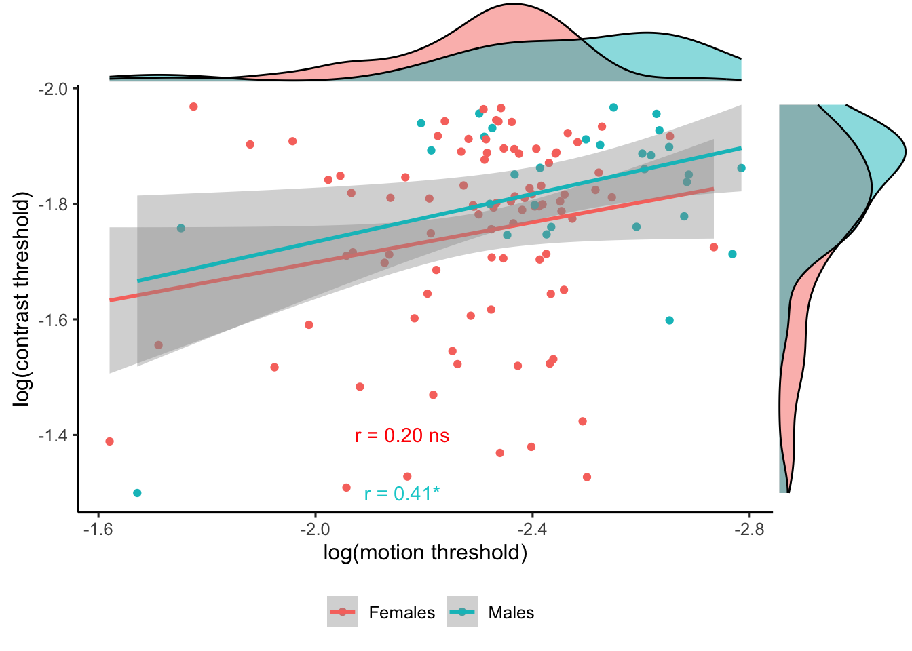
sex_diff_corr_summ("log_motion",
"log_contrast")| cor_coef | p_val | n | pop | stars |
|---|---|---|---|---|
| 0.29 | 0.00 | 122 | Both | *** |
| 0.41 | 0.03 | 30 | Males |
|
| 0.20 | 0.06 | 92 | Females | ns |
Motion sensitivity & Mental rotation
corr_df <- sex_diff_corr_summ("log_motion",
"mental_rot", print_table = FALSE)
sex_diff_scatter(
df_complete,
"log_motion",
"mental_rot",
x_rev = TRUE,
y_rev = FALSE,
# "r = 0.31**",
paste0("r = ", format(corr_df$cor_coef[3], digits = 2, nsmall = 2), corr_df$stars[3]),
paste0("r = ", format(corr_df$cor_coef[2], digits = 2, nsmall = 2), corr_df$stars[2]),
# "r = 0.09",
c(-2.2),
c(17, 15),
"log(motion threshold)",
"Mental rotation score"
)## `geom_smooth()` using formula 'y ~ x'
## `geom_smooth()` using formula 'y ~ x'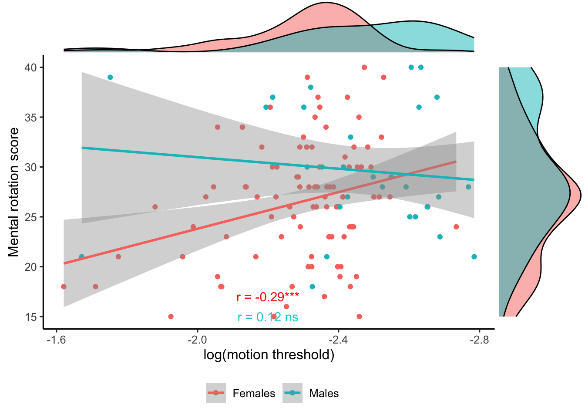
sex_diff_corr_summ("log_motion", "mental_rot")| cor_coef | p_val | n | pop | stars |
|---|---|---|---|---|
| -0.22 | 0.01 | 122 | Both |
|
| 0.12 | 0.53 | 30 | Males | ns |
| -0.29 | 0.00 | 92 | Females | *** |
Motion sensitivity & vocabulary
corr_df <- sex_diff_corr_summ("log_motion", "vocab",
print_table = FALSE)
sex_diff_scatter(
df_complete,
"log_motion",
"vocab",
x_rev = TRUE,
y_rev = FALSE,
# "r = 0.18",
# "r=0.22",
paste0("r = ", format(corr_df$cor_coef[3], digits = 2, nsmall = 2), corr_df$stars[3]),
paste0("r = ", format(corr_df$cor_coef[2], digits = 2, nsmall = 2), corr_df$stars[2]),
c(-2.25),
c(25, 23),
"log(motion threshold)",
"Vocabulary score"
)## `geom_smooth()` using formula 'y ~ x'
## `geom_smooth()` using formula 'y ~ x'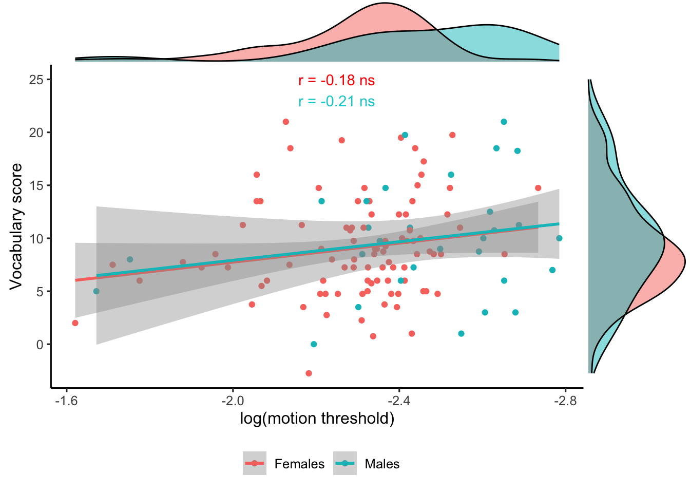
sex_diff_corr_summ("log_motion", "vocab")| cor_coef | p_val | n | pop | stars |
|---|---|---|---|---|
| -0.21 | 0.02 | 122 | Both |
|
| -0.21 | 0.27 | 30 | Males | ns |
| -0.18 | 0.08 | 92 | Females | ns |
Motion sensitivity & Feminine hobbies
corr_df <- sex_diff_corr_summ("log_motion", "Feminine_hobbies",
print_table = FALSE)
sex_diff_scatter(
df_complete,
"log_motion",
"Feminine_hobbies",
x_rev = TRUE,
y_rev = FALSE,
# "r = 0.17*",
# "r = -0.01",
paste0("r = ", format(corr_df$cor_coef[3], digits = 2, nsmall = 2), corr_df$stars[3]),
paste0("r = ", format(corr_df$cor_coef[2], digits = 2, nsmall = 2), corr_df$stars[2]),
c(-2),
c(2, 1.7),
"log(motion threshold)",
"Interest in feminine hobbies"
)## `geom_smooth()` using formula 'y ~ x'
## `geom_smooth()` using formula 'y ~ x'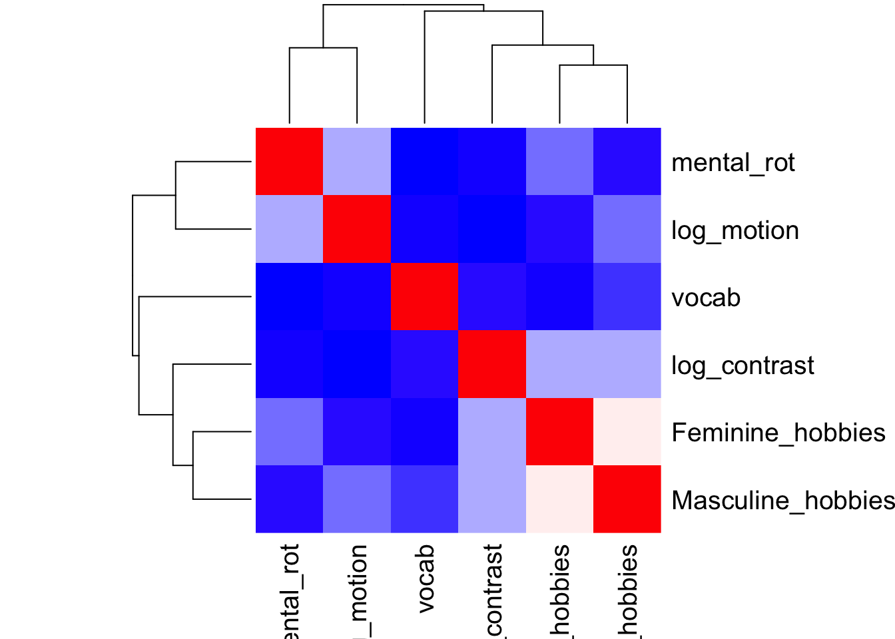
sex_diff_corr_summ("log_motion", "Feminine_hobbies")| cor_coef | p_val | n | pop | stars |
|---|---|---|---|---|
| 0.23 | 0.01 | 122 | Both |
|
| -0.02 | 0.90 | 30 | Males | ns |
| 0.18 | 0.08 | 92 | Females | ns |
Contrast sensitivity & mental rotation
corr_df <- sex_diff_corr_summ("log_contrast", "mental_rot",
print_table = FALSE)
sex_diff_scatter(
df_complete,
"log_contrast",
"mental_rot",
x_rev = TRUE,
y_rev = FALSE,
# "r = -0.19*",
# "r = 0.12",
paste0("r = ", format(corr_df$cor_coef[3], digits = 2, nsmall = 2), corr_df$stars[3]),
paste0("r = ", format(corr_df$cor_coef[2], digits = 2, nsmall = 2), corr_df$stars[2]),
c(-1.5),
c(35, 33),
"log(contrast threshold)",
"Mental rotation score"
)## `geom_smooth()` using formula 'y ~ x'
## `geom_smooth()` using formula 'y ~ x'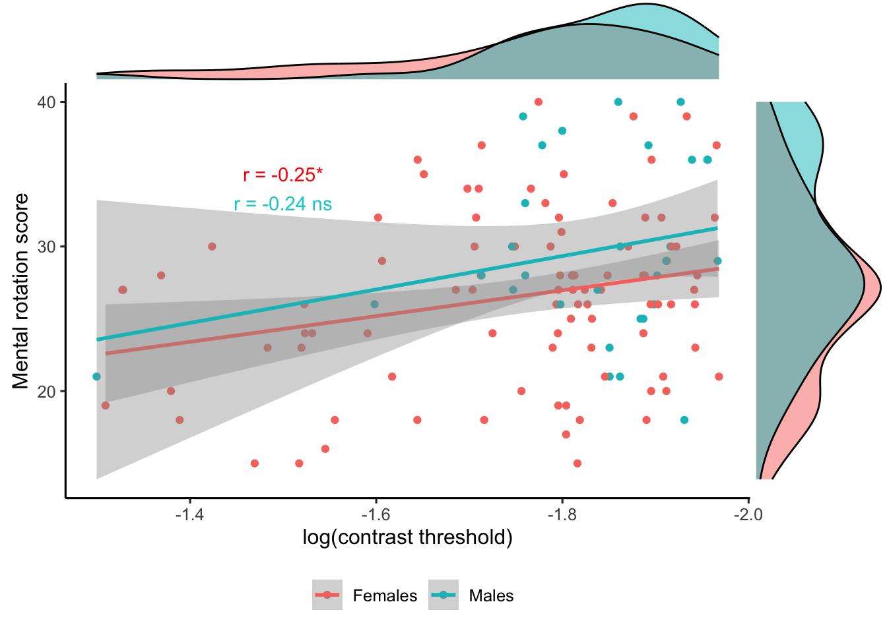
sex_diff_corr_summ("log_contrast", "mental_rot")| cor_coef | p_val | n | pop | stars |
|---|---|---|---|---|
| -0.28 | 0.00 | 122 | Both | *** |
| -0.24 | 0.19 | 30 | Males | ns |
| -0.25 | 0.02 | 92 | Females |
|
Contrast sensitivity & masculine hobbies
corr_df <- sex_diff_corr_summ("log_contrast", "Masculine_hobbies",
print_table = FALSE)
sex_diff_scatter(
df_complete,
"log_contrast",
"Masculine_hobbies",
x_rev = TRUE,
y_rev = FALSE,
# "r = -0.19*",
# "r = 0.26",
paste0("r = ", format(corr_df$cor_coef[3], digits = 2, nsmall = 2), corr_df$stars[3]),
paste0("r = ", format(corr_df$cor_coef[2], digits = 2, nsmall = 2), corr_df$stars[2]),
c(-1.5),
c(4.5, 4.2),
"log(contrast threshold)",
"Interest in masculine hobbies"
)## `geom_smooth()` using formula 'y ~ x'
## `geom_smooth()` using formula 'y ~ x'
sex_diff_corr_summ("log_contrast", "Masculine_hobbies")| cor_coef | p_val | n | pop | stars |
|---|---|---|---|---|
| -0.22 | 0.02 | 122 | Both |
|
| 0.15 | 0.43 | 30 | Males | ns |
| -0.18 | 0.08 | 92 | Females | ns |
Masculine and Feminine hobbies
corr_df <- sex_diff_corr_summ("Masculine_hobbies", "Feminine_hobbies", print_table = FALSE)
sex_diff_scatter(df_complete,
x_var = "Masculine_hobbies",
y_var = "Feminine_hobbies",
x_rev = FALSE,
y_rev = FALSE,
paste0("r = ", format(corr_df$cor_coef[3], digits = 2, nsmall = 2), corr_df$stars[3]),
paste0("r = ", format(corr_df$cor_coef[2], digits = 2, nsmall = 2), corr_df$stars[2]),
anx = 3,
any = c(1.9, 1.6),
"Interest in masculine hobbies",
"Interest in feminine hobbies")## `geom_smooth()` using formula 'y ~ x'
## `geom_smooth()` using formula 'y ~ x'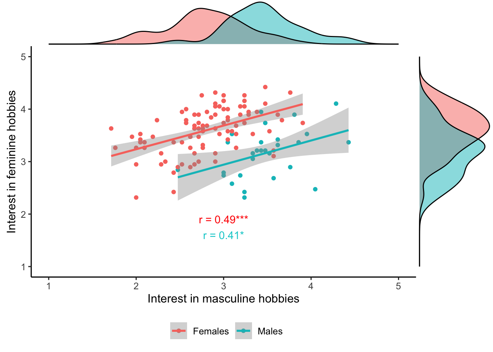
sex_diff_corr_summ("Masculine_hobbies", "Feminine_hobbies")| cor_coef | p_val | n | pop | stars |
|---|---|---|---|---|
| 0.15 | 0.11 | 122 | Both | ns |
| 0.42 | 0.02 | 30 | Males |
|
| 0.49 | 0.00 | 92 | Females | *** |
Mediation analysis
library(mediation)
# scale the variables Feminine_hobbies ->motion_dur_thr->mental_rot
# Step #1: The total effect
fit.totaleffect = lm(mental_rot ~ Feminine_hobbies, df2)
summary(fit.totaleffect) # As you can see, the total effect of f hobbies on our dv is significant (p<.05).##
## Call:
## lm(formula = mental_rot ~ Feminine_hobbies, data = df2)
##
## Residuals:
## Min 1Q Median 3Q Max
## -12.153 -4.216 0.081 4.374 13.786
##
## Coefficients:
## Estimate Std. Error t value Pr(>|t|)
## (Intercept) 38.73 3.99 9.71 <2e-16 ***
## Feminine_hobbies -3.35 1.13 -2.97 0.0036 **
## ---
## Signif. codes: 0 '***' 0.001 '**' 0.01 '*' 0.05 '.' 0.1 ' ' 1
##
## Residual standard error: 6 on 129 degrees of freedom
## (1 observation deleted due to missingness)
## Multiple R-squared: 0.0639, Adjusted R-squared: 0.0566
## F-statistic: 8.8 on 1 and 129 DF, p-value: 0.00359# Step #2: The effect of the IV onto the mediator
# To establish any mediation, the independent variable (iv, “sepal length” in our case) must significantly affect the mediator. This is logical as, without any effect here, no mediation can take place.
fit.mediator = lm(motion_dur_thr ~ Feminine_hobbies, df2)
summary(fit.mediator) # the total effect of f hobbies on our MRT is significant (p<.05).##
## Call:
## lm(formula = motion_dur_thr ~ Feminine_hobbies, data = df2)
##
## Residuals:
## Min 1Q Median 3Q Max
## -0.04081 -0.01350 -0.00504 0.00588 0.09419
##
## Coefficients:
## Estimate Std. Error t value Pr(>|t|)
## (Intercept) 0.06331 0.01605 3.94 0.00013 ***
## Feminine_hobbies 0.01034 0.00456 2.27 0.02500 *
## ---
## Signif. codes: 0 '***' 0.001 '**' 0.01 '*' 0.05 '.' 0.1 ' ' 1
##
## Residual standard error: 0.024 on 123 degrees of freedom
## (7 observations deleted due to missingness)
## Multiple R-squared: 0.0402, Adjusted R-squared: 0.0324
## F-statistic: 5.15 on 1 and 123 DF, p-value: 0.025# Step #3: The effect of the mediator on the dependent variable
fit.dv = lm(mental_rot ~ motion_dur_thr + Feminine_hobbies, df2)
summary(fit.dv) # The mediator has a significant effect (p<.05) on the dv.##
## Call:
## lm(formula = mental_rot ~ motion_dur_thr + Feminine_hobbies,
## data = df2)
##
## Residuals:
## Min 1Q Median 3Q Max
## -12.375 -3.817 -0.177 3.797 15.571
##
## Coefficients:
## Estimate Std. Error t value Pr(>|t|)
## (Intercept) 42.25 4.18 10.11 <2e-16 ***
## motion_dur_thr -48.40 22.11 -2.19 0.030 *
## Feminine_hobbies -2.91 1.14 -2.55 0.012 *
## ---
## Signif. codes: 0 '***' 0.001 '**' 0.01 '*' 0.05 '.' 0.1 ' ' 1
##
## Residual standard error: 5.8 on 122 degrees of freedom
## (7 observations deleted due to missingness)
## Multiple R-squared: 0.104, Adjusted R-squared: 0.0891
## F-statistic: 7.06 on 2 and 122 DF, p-value: 0.00125# Step #4: Causal Mediation Analysis
results = mediate(fit.mediator, fit.dv, treat = 'Feminine_hobbies', mediator =
'motion_dur_thr') # Also, we need to specify boot=T as, by default, mediate will use a quasi-Bayesian approximation for confidence intervals. However, we want to report percentile confidence intervals, so we set it to T for true.
summary(results)##
## Causal Mediation Analysis
##
## Quasi-Bayesian Confidence Intervals
##
## Estimate 95% CI Lower 95% CI Upper p-value
## ACME -4.84e-01 -1.24e+00 0.00 0.050 *
## ADE -2.89e+00 -5.06e+00 -0.82 0.002 **
## Total Effect -3.37e+00 -5.53e+00 -1.33 <2e-16 ***
## Prop. Mediated 1.34e-01 3.44e-05 0.48 0.050 *
## ---
## Signif. codes: 0 '***' 0.001 '**' 0.01 '*' 0.05 '.' 0.1 ' ' 1
##
## Sample Size Used: 125
##
##
## Simulations: 1000# not significant ACME is boot=TACME stands for average causal mediation effects. This is the indirect effect of the IV (sepal length) on the DV (likelihood of pollination) that goes through the mediator (attractiveness to bee). Note that it estimated this effect to be -.50 — this is exactly X (the effect of the IV on the mediator from step #2) times X (the mediator’s effect on the DV from step #3) — so not necessarily new information. However, what is new, is that we now have a confidence interval and significance levels for the entire indirect effect, not only its two parts. This is something we need for reporting the mediation. ADE stands for average direct effects. It describes the direct effect of the IV on the DV. Again — if you’ve been paying attention closely — this is not new information. We have calculated this effect before in step #3: the direct effect of the IV on the DV when controlling for the mediator. Total Effect stands for the total effect (direct + indirect) of the IV on the DV. This also isn’t new information. We calculated this in step #1. We can also get it by simply adding the ACME (.113) and the ADE (.019) to receive the total effect of .13. We also already knew that the total effect was significant from step #1. Prop. Mediated describes the proportion of the effect of the IV on the DV that goes through the mediator. It’s calculated by dividing the ACME (-0.50) by the total effect (-3.41) to receive .14. This piece of information is a nice tidbit but not necessarily the focus of our interest.
Feminine_hobbies ->mental_rot->motion_dur_thr
fit.totaleffect = lm(log_motion ~ Feminine_hobbies, df2)
summary(fit.totaleffect)##
## Call:
## lm(formula = log_motion ~ Feminine_hobbies, data = df2)
##
## Residuals:
## Min 1Q Median 3Q Max
## -0.4773 -0.1184 -0.0269 0.0814 0.7190
##
## Coefficients:
## Estimate Std. Error t value Pr(>|t|)
## (Intercept) -2.6995 0.1437 -18.79 <2e-16 ***
## Feminine_hobbies 0.1049 0.0408 2.57 0.011 *
## ---
## Signif. codes: 0 '***' 0.001 '**' 0.01 '*' 0.05 '.' 0.1 ' ' 1
##
## Residual standard error: 0.21 on 123 degrees of freedom
## (7 observations deleted due to missingness)
## Multiple R-squared: 0.051, Adjusted R-squared: 0.0433
## F-statistic: 6.61 on 1 and 123 DF, p-value: 0.0113fit.Y = lm(log_motion ~ mental_rot + Feminine_hobbies, df_complete_F)
summary(fit.Y)##
## Call:
## lm(formula = log_motion ~ mental_rot + Feminine_hobbies, data = df_complete_F)
##
## Residuals:
## Min 1Q Median 3Q Max
## -0.4611 -0.1071 -0.0296 0.0860 0.5788
##
## Coefficients:
## Estimate Std. Error t value Pr(>|t|)
## (Intercept) -2.23349 0.21704 -10.29 <2e-16 ***
## mental_rot -0.00838 0.00341 -2.46 0.016 *
## Feminine_hobbies 0.04451 0.04717 0.94 0.348
## ---
## Signif. codes: 0 '***' 0.001 '**' 0.01 '*' 0.05 '.' 0.1 ' ' 1
##
## Residual standard error: 0.18 on 89 degrees of freedom
## Multiple R-squared: 0.0955, Adjusted R-squared: 0.0751
## F-statistic: 4.7 on 2 and 89 DF, p-value: 0.0115fit.M = lm(mental_rot ~ Feminine_hobbies, df_complete_F)
summary(fit.M) # the total effect of f hobbies on our MRT is significant (p<.05).##
## Call:
## lm(formula = mental_rot ~ Feminine_hobbies, data = df_complete_F)
##
## Residuals:
## Min 1Q Median 3Q Max
## -12.465 -4.156 0.085 4.111 11.102
##
## Coefficients:
## Estimate Std. Error t value Pr(>|t|)
## (Intercept) 42.47 5.01 8.48 4.1e-13 ***
## Feminine_hobbies -4.43 1.38 -3.21 0.0019 **
## ---
## Signif. codes: 0 '***' 0.001 '**' 0.01 '*' 0.05 '.' 0.1 ' ' 1
##
## Residual standard error: 5.7 on 90 degrees of freedom
## Multiple R-squared: 0.103, Adjusted R-squared: 0.0926
## F-statistic: 10.3 on 1 and 90 DF, p-value: 0.00186# gvlma(fit.M)
# Step #3: The effect of the mediator on the dependent variable
# The mediator has a significant effect (p<.05) on the dv.
# Step #4: Causal Mediation Analysis
results1 = mediate(fit.M, fit.Y, treat = 'Feminine_hobbies', mediator =
'mental_rot') # Also, we need to specify boot=T as, by default, mediate will use a quasi-Bayesian approximation for confidence intervals. However, we want to report percentile confidence intervals, so we set it to T for true.
summary(results1)##
## Causal Mediation Analysis
##
## Quasi-Bayesian Confidence Intervals
##
## Estimate 95% CI Lower 95% CI Upper p-value
## ACME 0.03727 0.00474 0.08 0.020 *
## ADE 0.04491 -0.05167 0.14 0.316
## Total Effect 0.08218 -0.00914 0.18 0.082 .
## Prop. Mediated 0.41742 -1.53210 3.27 0.098 .
## ---
## Signif. codes: 0 '***' 0.001 '**' 0.01 '*' 0.05 '.' 0.1 ' ' 1
##
## Sample Size Used: 92
##
##
## Simulations: 1000log_motion->mental_rot->Feminine_hobbies
fit.totaleffect3 = lm(Feminine_hobbies ~ log_motion, df2)
summary(fit.totaleffect3)##
## Call:
## lm(formula = Feminine_hobbies ~ log_motion, data = df2)
##
## Residuals:
## Min 1Q Median 3Q Max
## -1.1080 -0.2322 0.0191 0.3455 1.0180
##
## Coefficients:
## Estimate Std. Error t value Pr(>|t|)
## (Intercept) 4.627 0.443 10.44 <2e-16 ***
## log_motion 0.486 0.189 2.57 0.011 *
## ---
## Signif. codes: 0 '***' 0.001 '**' 0.01 '*' 0.05 '.' 0.1 ' ' 1
##
## Residual standard error: 0.46 on 123 degrees of freedom
## (7 observations deleted due to missingness)
## Multiple R-squared: 0.051, Adjusted R-squared: 0.0433
## F-statistic: 6.61 on 1 and 123 DF, p-value: 0.0113fit.Y3 = lm(Feminine_hobbies ~ mental_rot + log_motion, df2)
summary(fit.Y3)##
## Call:
## lm(formula = Feminine_hobbies ~ mental_rot + log_motion, data = df2)
##
## Residuals:
## Min 1Q Median 3Q Max
## -1.1123 -0.2375 0.0075 0.3175 0.9938
##
## Coefficients:
## Estimate Std. Error t value Pr(>|t|)
## (Intercept) 4.84051 0.44221 10.95 <2e-16 ***
## mental_rot -0.01706 0.00677 -2.52 0.013 *
## log_motion 0.37871 0.19007 1.99 0.049 *
## ---
## Signif. codes: 0 '***' 0.001 '**' 0.01 '*' 0.05 '.' 0.1 ' ' 1
##
## Residual standard error: 0.45 on 122 degrees of freedom
## (7 observations deleted due to missingness)
## Multiple R-squared: 0.0979, Adjusted R-squared: 0.0832
## F-statistic: 6.62 on 2 and 122 DF, p-value: 0.00186fit.M3 = lm(mental_rot ~ log_motion, df2)
summary(fit.M3) # the total effect of f hobbies on our MRT is significant (p<.05).##
## Call:
## lm(formula = mental_rot ~ log_motion, data = df2)
##
## Residuals:
## Min 1Q Median 3Q Max
## -13.056 -3.953 -0.761 3.419 15.405
##
## Coefficients:
## Estimate Std. Error t value Pr(>|t|)
## (Intercept) 12.53 5.78 2.17 0.032 *
## log_motion -6.31 2.47 -2.56 0.012 *
## ---
## Signif. codes: 0 '***' 0.001 '**' 0.01 '*' 0.05 '.' 0.1 ' ' 1
##
## Residual standard error: 6 on 123 degrees of freedom
## (7 observations deleted due to missingness)
## Multiple R-squared: 0.0506, Adjusted R-squared: 0.0429
## F-statistic: 6.55 on 1 and 123 DF, p-value: 0.0117# gvlma(fit.M)
# Step #3: The effect of the mediator on the dependent variable
# The mediator has a significant effect (p<.05) on the dv.
# Step #4: Causal Mediation Analysis
results3 = mediate(fit.M3, fit.Y3, treat = 'log_motion', mediator = 'mental_rot') # Also, we need to specify boot=T as, by default, mediate will use a quasi-Bayesian approximation for confidence intervals. However, we want to report percentile confidence intervals, so we set it to T for true.
summary(results3)##
## Causal Mediation Analysis
##
## Quasi-Bayesian Confidence Intervals
##
## Estimate 95% CI Lower 95% CI Upper p-value
## ACME 0.11064 0.00904 0.26 0.030 *
## ADE 0.38900 0.01010 0.74 0.044 *
## Total Effect 0.49965 0.12557 0.86 0.014 *
## Prop. Mediated 0.20505 0.00885 0.86 0.044 *
## ---
## Signif. codes: 0 '***' 0.001 '**' 0.01 '*' 0.05 '.' 0.1 ' ' 1
##
## Sample Size Used: 125
##
##
## Simulations: 1000log_motion->Feminine_hobbies->mental_rot
fit.totaleffect4 = lm(mental_rot ~ log_motion, df2)
summary(fit.totaleffect4)##
## Call:
## lm(formula = mental_rot ~ log_motion, data = df2)
##
## Residuals:
## Min 1Q Median 3Q Max
## -13.056 -3.953 -0.761 3.419 15.405
##
## Coefficients:
## Estimate Std. Error t value Pr(>|t|)
## (Intercept) 12.53 5.78 2.17 0.032 *
## log_motion -6.31 2.47 -2.56 0.012 *
## ---
## Signif. codes: 0 '***' 0.001 '**' 0.01 '*' 0.05 '.' 0.1 ' ' 1
##
## Residual standard error: 6 on 123 degrees of freedom
## (7 observations deleted due to missingness)
## Multiple R-squared: 0.0506, Adjusted R-squared: 0.0429
## F-statistic: 6.55 on 1 and 123 DF, p-value: 0.0117fit.Y4 = lm(mental_rot ~ Feminine_hobbies + log_motion, df2)
summary(fit.Y4)##
## Call:
## lm(formula = mental_rot ~ Feminine_hobbies + log_motion, data = df2)
##
## Residuals:
## Min 1Q Median 3Q Max
## -12.321 -4.191 -0.105 3.898 14.838
##
## Coefficients:
## Estimate Std. Error t value Pr(>|t|)
## (Intercept) 25.95 7.77 3.34 0.0011 **
## Feminine_hobbies -2.90 1.15 -2.52 0.0130 *
## log_motion -4.90 2.48 -1.98 0.0502 .
## ---
## Signif. codes: 0 '***' 0.001 '**' 0.01 '*' 0.05 '.' 0.1 ' ' 1
##
## Residual standard error: 5.8 on 122 degrees of freedom
## (7 observations deleted due to missingness)
## Multiple R-squared: 0.0975, Adjusted R-squared: 0.0827
## F-statistic: 6.59 on 2 and 122 DF, p-value: 0.00191fit.M4 = lm(Feminine_hobbies ~ log_motion, df2)
summary(fit.M4) # the total effect of f hobbies on our MRT is significant (p<.05).##
## Call:
## lm(formula = Feminine_hobbies ~ log_motion, data = df2)
##
## Residuals:
## Min 1Q Median 3Q Max
## -1.1080 -0.2322 0.0191 0.3455 1.0180
##
## Coefficients:
## Estimate Std. Error t value Pr(>|t|)
## (Intercept) 4.627 0.443 10.44 <2e-16 ***
## log_motion 0.486 0.189 2.57 0.011 *
## ---
## Signif. codes: 0 '***' 0.001 '**' 0.01 '*' 0.05 '.' 0.1 ' ' 1
##
## Residual standard error: 0.46 on 123 degrees of freedom
## (7 observations deleted due to missingness)
## Multiple R-squared: 0.051, Adjusted R-squared: 0.0433
## F-statistic: 6.61 on 1 and 123 DF, p-value: 0.0113# gvlma(fit.M)
# Step #3: The effect of the mediator on the dependent variable
# The mediator has a significant effect (p<.05) on the dv.
# Step #4: Causal Mediation Analysis
results4 = mediate(fit.M4, fit.Y4, treat = 'log_motion', mediator = 'Feminine_hobbies') # Also, we need to specify boot=T as, by default, mediate will use a quasi-Bayesian approximation for confidence intervals. However, we want to report percentile confidence intervals, so we set it to T for true.
summary(results4)##
## Causal Mediation Analysis
##
## Quasi-Bayesian Confidence Intervals
##
## Estimate 95% CI Lower 95% CI Upper p-value
## ACME -1.3932 -3.2698 -0.12 0.034 *
## ADE -4.9396 -9.4986 -0.13 0.040 *
## Total Effect -6.3328 -11.1588 -1.72 0.006 **
## Prop. Mediated 0.2108 0.0137 0.89 0.040 *
## ---
## Signif. codes: 0 '***' 0.001 '**' 0.01 '*' 0.05 '.' 0.1 ' ' 1
##
## Sample Size Used: 125
##
##
## Simulations: 1000Masculine_hobbies ->log_contrast->mental_rot
# Step #1: The total effect
fit.totaleffect2 = lm(mental_rot ~ Masculine_hobbies, df2)
summary(fit.totaleffect2) # As you can see, the total effect of f hobbies on our dv is significant (p<.05).##
## Call:
## lm(formula = mental_rot ~ Masculine_hobbies, data = df2)
##
## Residuals:
## Min 1Q Median 3Q Max
## -12.484 -4.087 0.002 4.009 13.884
##
## Coefficients:
## Estimate Std. Error t value Pr(>|t|)
## (Intercept) 24.263 3.101 7.82 1.6e-12 ***
## Masculine_hobbies 0.927 1.033 0.90 0.37
## ---
## Signif. codes: 0 '***' 0.001 '**' 0.01 '*' 0.05 '.' 0.1 ' ' 1
##
## Residual standard error: 6.2 on 129 degrees of freedom
## (1 observation deleted due to missingness)
## Multiple R-squared: 0.00619, Adjusted R-squared: -0.00151
## F-statistic: 0.804 on 1 and 129 DF, p-value: 0.372# Step #2: The effect of the IV onto the mediator
# To establish any mediation, the independent variable (iv, “sepal length” in our case) must significantly affect the mediator. This is logical as, without any effect here, no mediation can take place.
fit.m2 = lm(log_contrast ~ Masculine_hobbies, df2)
summary(fit.m2) # the total effect of f hobbies on our MRT is significant (p<.05).##
## Call:
## lm(formula = log_contrast ~ Masculine_hobbies, data = df2)
##
## Residuals:
## Min 1Q Median 3Q Max
## -0.2269 -0.1191 -0.0380 0.0583 0.5041
##
## Coefficients:
## Estimate Std. Error t value Pr(>|t|)
## (Intercept) -1.5825 0.0793 -19.95 <2e-16 ***
## Masculine_hobbies -0.0636 0.0264 -2.42 0.017 *
## ---
## Signif. codes: 0 '***' 0.001 '**' 0.01 '*' 0.05 '.' 0.1 ' ' 1
##
## Residual standard error: 0.16 on 125 degrees of freedom
## (5 observations deleted due to missingness)
## Multiple R-squared: 0.0446, Adjusted R-squared: 0.0369
## F-statistic: 5.83 on 1 and 125 DF, p-value: 0.0172# Step #3: The effect of the mediator on the dependent variable
fit.y2 = lm(mental_rot ~ log_contrast + Masculine_hobbies, df2)
summary(fit.y2) # The mediator has a significant effect (p<.05) on the dv.##
## Call:
## lm(formula = mental_rot ~ log_contrast + Masculine_hobbies, data = df2)
##
## Residuals:
## Min 1Q Median 3Q Max
## -12.631 -3.934 -0.335 3.981 13.003
##
## Coefficients:
## Estimate Std. Error t value Pr(>|t|)
## (Intercept) 7.613 6.175 1.23 0.220
## log_contrast -10.743 3.404 -3.16 0.002 **
## Masculine_hobbies 0.161 1.026 0.16 0.875
## ---
## Signif. codes: 0 '***' 0.001 '**' 0.01 '*' 0.05 '.' 0.1 ' ' 1
##
## Residual standard error: 6 on 124 degrees of freedom
## (5 observations deleted due to missingness)
## Multiple R-squared: 0.0792, Adjusted R-squared: 0.0644
## F-statistic: 5.34 on 2 and 124 DF, p-value: 0.00599# Step #4: Causal Mediation Analysis
results2 = mediate(fit.m2, fit.y2, treat = 'Masculine_hobbies', mediator =
'log_contrast') # Also, we need to specify boot=T as, by default, mediate will use a quasi-Bayesian approximation for confidence intervals. However, we want to report percentile confidence intervals, so we set it to T for true.
summary(results2)##
## Causal Mediation Analysis
##
## Quasi-Bayesian Confidence Intervals
##
## Estimate 95% CI Lower 95% CI Upper p-value
## ACME 0.687 0.107 1.51 0.006 **
## ADE 0.209 -1.811 2.15 0.840
## Total Effect 0.897 -1.178 2.85 0.376
## Prop. Mediated 0.467 -4.931 6.61 0.378
## ---
## Signif. codes: 0 '***' 0.001 '**' 0.01 '*' 0.05 '.' 0.1 ' ' 1
##
## Sample Size Used: 127
##
##
## Simulations: 1000# not significant ACME is boot=Tlog_contrast->Masculine_hobbies->mental_rot
fit.totaleffect = lm(mental_rot ~ log_contrast, df2)
summary(fit.totaleffect)##
## Call:
## lm(formula = mental_rot ~ log_contrast, data = df2)
##
## Residuals:
## Min 1Q Median 3Q Max
## -12.608 -3.849 -0.386 3.948 12.847
##
## Coefficients:
## Estimate Std. Error t value Pr(>|t|)
## (Intercept) 7.89 5.89 1.34 0.1830
## log_contrast -10.86 3.31 -3.28 0.0014 **
## ---
## Signif. codes: 0 '***' 0.001 '**' 0.01 '*' 0.05 '.' 0.1 ' ' 1
##
## Residual standard error: 6 on 125 degrees of freedom
## (5 observations deleted due to missingness)
## Multiple R-squared: 0.0791, Adjusted R-squared: 0.0717
## F-statistic: 10.7 on 1 and 125 DF, p-value: 0.00136fit.Y5 = lm(mental_rot ~ Masculine_hobbies + log_contrast, df2)
summary(fit.Y5)##
## Call:
## lm(formula = mental_rot ~ Masculine_hobbies + log_contrast, data = df2)
##
## Residuals:
## Min 1Q Median 3Q Max
## -12.631 -3.934 -0.335 3.981 13.003
##
## Coefficients:
## Estimate Std. Error t value Pr(>|t|)
## (Intercept) 7.613 6.175 1.23 0.220
## Masculine_hobbies 0.161 1.026 0.16 0.875
## log_contrast -10.743 3.404 -3.16 0.002 **
## ---
## Signif. codes: 0 '***' 0.001 '**' 0.01 '*' 0.05 '.' 0.1 ' ' 1
##
## Residual standard error: 6 on 124 degrees of freedom
## (5 observations deleted due to missingness)
## Multiple R-squared: 0.0792, Adjusted R-squared: 0.0644
## F-statistic: 5.34 on 2 and 124 DF, p-value: 0.00599fit.M5 = lm(Masculine_hobbies ~ log_contrast, df2)
summary(fit.M5) # the total effect of f hobbies on our MRT is significant (p<.05).##
## Call:
## lm(formula = Masculine_hobbies ~ log_contrast, data = df2)
##
## Residuals:
## Min 1Q Median 3Q Max
## -1.2350 -0.3258 -0.0026 0.3087 1.3635
##
## Coefficients:
## Estimate Std. Error t value Pr(>|t|)
## (Intercept) 1.723 0.516 3.34 0.0011 **
## log_contrast -0.701 0.290 -2.42 0.0172 *
## ---
## Signif. codes: 0 '***' 0.001 '**' 0.01 '*' 0.05 '.' 0.1 ' ' 1
##
## Residual standard error: 0.52 on 125 degrees of freedom
## (5 observations deleted due to missingness)
## Multiple R-squared: 0.0446, Adjusted R-squared: 0.0369
## F-statistic: 5.83 on 1 and 125 DF, p-value: 0.0172# gvlma(fit.M)
# Step #3: The effect of the mediator on the dependent variable
# The mediator has a significant effect (p<.05) on the dv.
# Step #4: Causal Mediation Analysis
results5 = mediate(fit.M5, fit.Y5, treat = 'log_contrast', mediator = 'Masculine_hobbies') # Also, we need to specify boot=T as, by default, mediate will use a quasi-Bayesian approximation for confidence intervals. However, we want to report percentile confidence intervals, so we set it to T for true.
summary(results5)##
## Causal Mediation Analysis
##
## Quasi-Bayesian Confidence Intervals
##
## Estimate 95% CI Lower 95% CI Upper p-value
## ACME -0.13808 -1.66810 1.28 0.864
## ADE -10.78500 -17.39314 -4.41 0.004 **
## Total Effect -10.92307 -17.30313 -4.41 0.002 **
## Prop. Mediated 0.00844 -0.14754 0.18 0.866
## ---
## Signif. codes: 0 '***' 0.001 '**' 0.01 '*' 0.05 '.' 0.1 ' ' 1
##
## Sample Size Used: 127
##
##
## Simulations: 1000